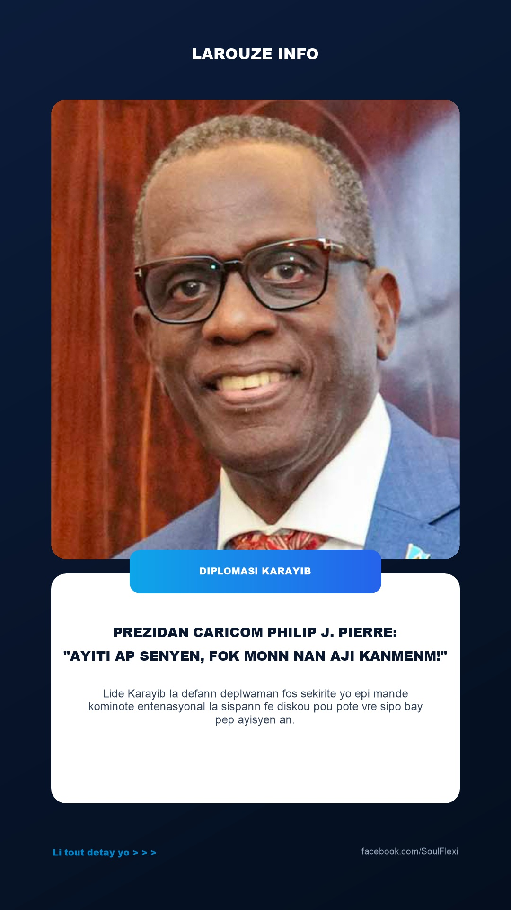
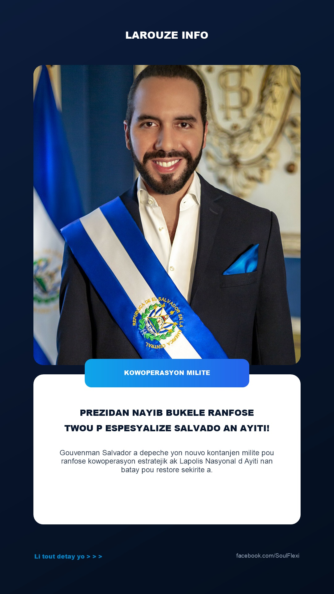
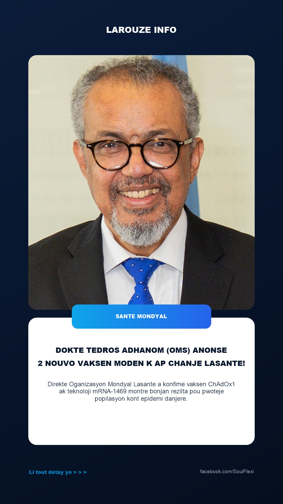
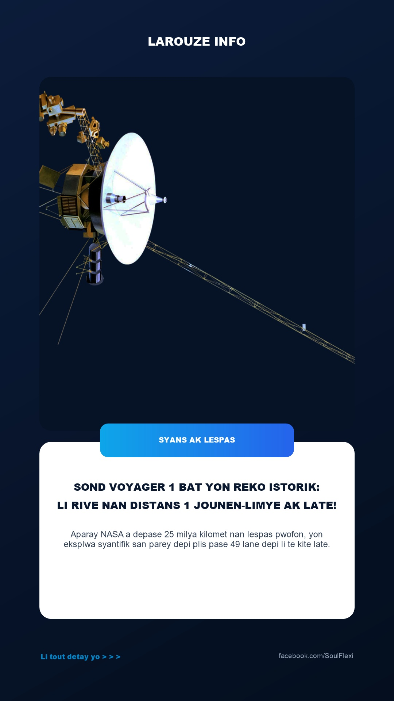
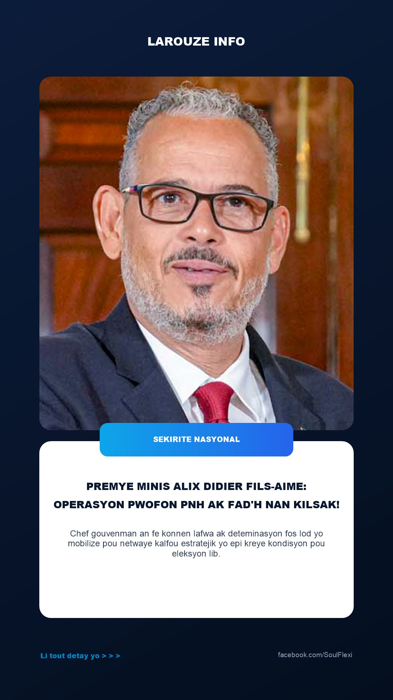

📌 Lidè rejyon Karayib la mande kominote entènasyonal la sispann fè bèl diskou sou papye, men pou yo pote bonjan sipò lojistik ak sekirite bay pèp ayisyen an san pèdi tan.

📌 Gouvènman Salvadò a voye yon nouvo kontanjen militè espesyalize pou vin pote ranfò estratejik bay Lapolis Nasyonal d Ayiti (PNH) ak FAd'H nan batay kont ensekirite a.

📌 Direktè Jeneral Òganizasyon Mondyal Lasante a konfime vaksen ChAdOx1 ak teknoloji mRNA-1469 montre bonjan rezilta pozitif nan tès klinik pou konbat viris danjere k ap parèt yo.

📌 Aparèy espasyal NASA a depase 25 milya kilomèt nan lespas pwofon, yon distans ki fè siyal radyo li yo pran yon jounen konplè pou yo rive sou tè a.

📌 Chèf gouvènman an mande fòs lòd yo kenbe presyon an sou gwoup ame yo nan zòn estratejik tankou Kwadèmisyon, Chada, ak Santo pou debloke wout nasyonal yo.